Atlas is a map agent. You tell it where you are and what you are after, and it shows you three places worth the walk, with a description you can check and the walking route to each one.
You will not build it in one go. You will ask the same question six times, and each time the agent gets exactly one new thing. That way you can see what each idea is for.
| Step | The one new idea | What changes in the answer |
|---|---|---|
| 1 | An agent is a model with a job | Confident, and not checked against anything |
| 2 | A tool is a Python function | Real places with real distances |
| 3 | MCP serves those tools to any agent | Same answer, and the agent has no map code left |
| 4 | MCP auth decides who may call the tools | Without a login, the tools are refused |
| 5 | A2A lets one agent ask another | Each place gets a description with facts |
| 6 | A skill is a new job in one file | The agent can plan a walking tour |
At the end, the same pieces run behind a map:
your browser ── web app ── recommendation agent ──MCP──▶ places server
│ geocode · nearby_places · walking_route
│
├──A2A──▶ description agent ── Google Search
│
└──skill── walking-tour (one file of instructions)
You do not need to have built an agent before, or to have used Google Cloud. This guide starts from an empty laptop.
| You will need | Details |
|---|---|
| A laptop | Windows, macOS or Linux, with permission to install programs |
| A Google account | Any Gmail address works |
| A bank card | Google Cloud asks for one to open a billing account, even for small use |
| About 45 minutes | For sections 3 to 5, which you only ever do once |
| About an hour | For the steps themselves |
A terminal is a window where you type commands. You will use it throughout.
| On | Do this |
|---|---|
| Windows | Press the Windows key, type PowerShell, press Enter |
| macOS | Press Cmd+Space, type Terminal, press Enter |
| Linux | Press Ctrl+Alt+T |
Dark boxes show a terminal. A bright line after the green > is something you type, followed by Enter. Do not type the > itself. Grey lines are what the computer answers; yours may differ slightly.
python --version Python 3.13.0
Type one line at a time and wait for it to finish before typing the next.
Python runs the code. Git downloads it. The Google Cloud CLI signs you in. If you already have one of them, run its check and skip ahead.
Check it:
python --version Python 3.13.0
Any version from 3.11 up is fine. On macOS and Linux the command may be
python3. If python is not found, try
python3 --version, and use python3 wherever this guide says
python until section 5.2.
git --version in the terminal. If Git is missing, a
window offers to install the developer tools. Press Install.Check it:
git --version git version 2.54.0.windows.1
This gives you the gcloud command. It is how your laptop proves to Google
who you are, so that the code never needs a secret key.
gcloud to your terminal.Check it:
gcloud --version Google Cloud SDK 571.0.0
Your number will be different. If the terminal says gcloud is not
recognised, close every terminal window and open a fresh one. If it still fails, run the
installer once more.
The agents use Google's Gemini model. Google runs it for you, and to use it you need four things: a project, a billing account, the service switched on, and your laptop signed in.
A project is a labelled box that holds everything you use on Google Cloud and the bill for it.
my-atlas-123456, and you will type it twice later. The ID is what
matters, not the name.You know it worked when your project's row shows the billing account's name instead of Billing is disabled.
Type these two lines. Replace YOUR_PROJECT_ID with the ID you wrote down.
gcloud auth login gcloud config set project YOUR_PROJECT_ID
gcloud which project to work in. It answers with a line that starts Updated property.On Google Cloud, Gemini is reached through a service called Vertex AI. Every service is off until you switch it on for your project. One line does it:
gcloud services enable aiplatform.googleapis.com
It thinks for up to a minute and then reports that the operation finished. If it complains about billing, go back to 4.2: the project is not connected to a billing account yet.
gcloud auth application-default login
The browser opens again. Choose the same account and press Allow.
This looks like a repeat of 4.3, but it is a different login. The first one signed
you in to the gcloud tool. This one signs in programs running on
your laptop, which is what the agents are. It is the reason there is no API key
anywhere in the code.
In your terminal, go to a folder where you keep projects (your Documents folder is fine), then copy the repository and step into the folder for this session:
cd Documents git clone https://github.com/Kiruthika162003/atlas-agents-workshop.git cd atlas-agents-workshop/demo1-build
cd means "change directory": it moves the terminal into a folder.
Everything from here on is typed inside demo1-build. To see that you
are in the right place, list what is there:
WINDOWS: dir · MACOS AND LINUX: lsls
GUIDE.md Modelfile README.md atlas/ check.py description_agent/
learn/ mcp_server/ requirements.txt skills/ start.py
| Folder or file | What it is | Runs on |
|---|---|---|
learn/ | The step by step agents, one small folder each | port 8000 |
mcp_server/ | The places server: three map tools served over MCP | port 8001 |
description_agent/ | The second agent, reached over A2A | port 8002 |
skills/ | The walking tour skill, one file | |
atlas/ | The map app and the recommendation agent behind it | port 5000 |
check.py | Tests your setup and tells you what to fix | |
start.py | Starts the whole map app with one command |
cd into the
demo1-build folder inside.cd Documents/atlas-agents-workshop/demo1-build, then switch the virtual
environment on again (5.2).A virtual environment keeps this project's packages separate from the rest of your computer. Create it once, then switch it on. You must switch it on again in every new terminal you open.
WINDOWS (POWERSHELL)python -m venv .venv
.venv\Scripts\activate
MACOS AND LINUXpython3 -m venv .venv
source .venv/bin/activate
When it is on, the start of your prompt shows (.venv). From now on, plain
python works on every system.
Set-ExecutionPolicy -Scope CurrentUser RemoteSigned once, answer Y, and try
the activate line again.pip install -r requirements.txt
This downloads the Agent Development Kit, the MCP library and the small web framework the map uses. It takes a few minutes and prints a lot. It is finished when your prompt comes back and one of the last lines starts with Successfully installed.
Copy the example settings file:
WINDOWScopy .env.example .env
MACOS AND LINUXcp .env.example .env
Open the new .env file in a text editor. On Windows,
notepad .env opens it; on macOS, open -e .env. Find the line
GOOGLE_CLOUD_PROJECT=your-project-id and replace
your-project-id with your own Project ID. Save and close. The lines that
matter should read:
GOOGLE_GENAI_USE_VERTEXAI=TRUE GOOGLE_CLOUD_PROJECT=my-atlas-123456 GOOGLE_CLOUD_LOCATION=global ATLAS_MODEL=gemini-3.8-flash
One command tests the whole setup, including a real question to Gemini:
python check.py Checking your setup [ ok ] Python 3.13 [ ok ] The packages are installed [ ok ] The settings file points at project my-atlas-123456 [ ok ] gcloud is installed [ ok ] Programs on this computer are signed in [ ok ] Gemini answered: ready (model gemini-3.8-flash) [ ok ] The map service answered: Eiffel Tower is at 48.8583, 2.2945 Everything works. You are ready for step 1.
If a line says [ FIX ], the check stops there and the line under it tells you
what to do. Fix that one thing and run python check.py again.
| The line that fails | What it means | Go to |
|---|---|---|
| A package is missing | The virtual environment is off, or the install did not finish | 5.2, then 5.3 |
| There is no .env file, or it has the placeholder | The settings file was not copied or not edited | 5.4 |
| The gcloud command was not found | The Google Cloud CLI is not installed, or this terminal is older than the install | 3.3, then open a new terminal |
| Programs are not signed in | The second login is missing | 4.5 |
| Gemini refused: billing is off | The project has no billing account | 4.2 |
| Gemini refused: Vertex AI is not switched on | The service is still off | 4.4 |
| Gemini is busy (429) | Nothing is wrong on your side | Wait a minute and try again |
Do not go further until the last line says Everything works. Every later step depends on it.
The Agent Development Kit comes with a small website for trying agents. Start it and leave it running.
adk web learn INFO: Started server process [20588] INFO: Waiting for application startup. +-----------------------------------------------------------------------------+ | ADK Web Server started | | | | For local testing, access at http://127.0.0.1:8000. | +-----------------------------------------------------------------------------+ INFO: Uvicorn running on http://127.0.0.1:8000 (Press CTRL+C to quit)
Open http://127.0.0.1:8000 in your browser. The dropdown at the top left lists the agents. You will pick them one after another.
demo1-build folder, and switch the virtual environment on again
(section 5.2). To stop a running program, click its terminal and press Ctrl+C.In the dropdown, pick agent_1_simple. Type the question and press Enter.
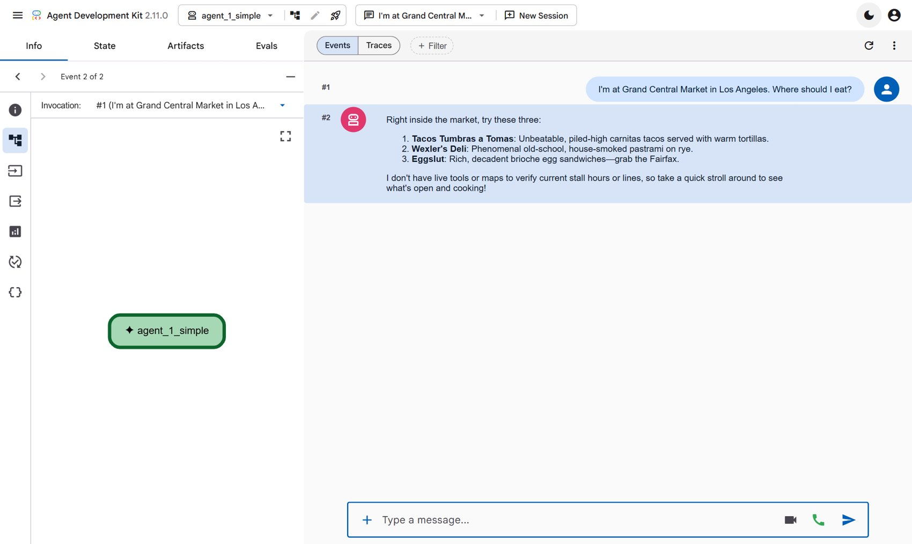
learn/agent_1_simple/agent.py; it is about twenty lines.root_agent = Agent(
name="agent_1_simple",
model=os.getenv("ATLAS_MODEL", "gemini-3.8-flash"),
description="A local guide with no tools.",
instruction=("You are Atlas, a local guide. ... You have NO tools and NO map ..."),
)
Pick agent_2_tools and ask the same question.
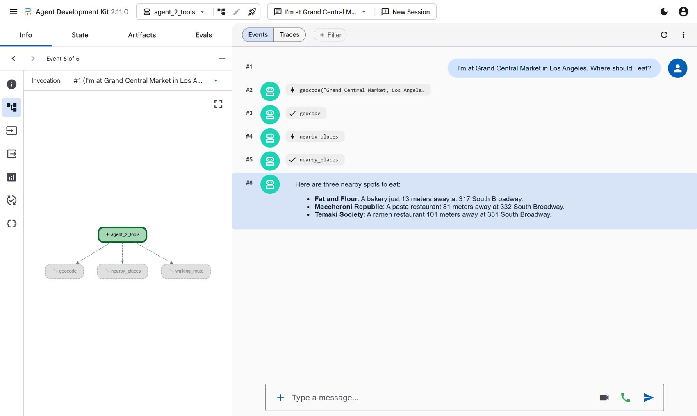
geocode, then nearby_places, then
the reply. On the left, the three tools this agent owns.def geocode(place: str) -> dict:
"""Turn a place name or address into coordinates.
Args:
place: a name and its city, e.g. "Grand Central Market, Los Angeles".
"""
...
root_agent = Agent(
...
tools=[geocode, nearby_places, walking_route],
)
Click any row in the conversation to see exactly what was sent and what came back.
The three functions work, but they live inside one agent's file. The next agent would have to copy them. MCP, the Model Context Protocol, is an agreed way to serve tools so that any agent can use them.
Open a second terminal, switch on the virtual environment, and start the places server. Leave it running.
python mcp_server/server.py Open. Anyone who can reach this address may call the tools. INFO: Uvicorn running on http://localhost:8001 (Press CTRL+C to quit)
Back in the browser, pick agent_3_mcp and ask the same question.
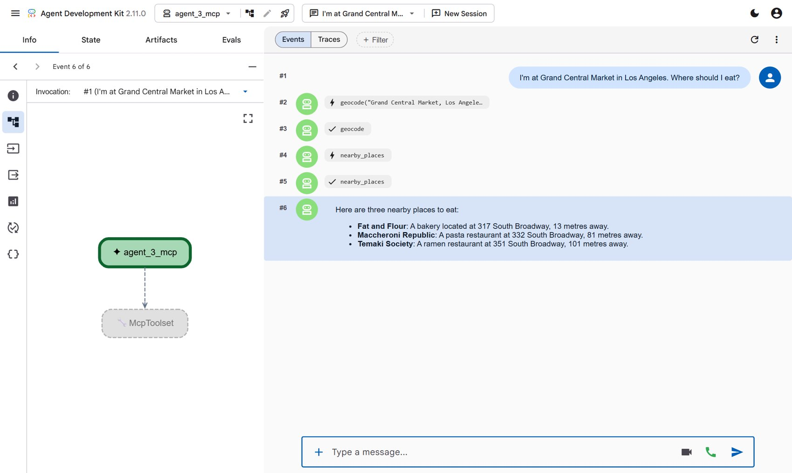
mcp_server/server.py the functions are the same, with @mcp.tool() on top. In learn/agent_3_mcp/agent.py there is no map code left: the agent points at an address and asks the server what it offers.places = McpToolset(
connection_params=StreamableHTTPConnectionParams(url="http://localhost:8001/mcp", timeout=60),
)
root_agent = Agent(..., tools=[places])
Look again at what the server printed when it started: Anyone who can reach this address may call the tools. On your laptop that is only you. On the internet it is everybody.
Open a third terminal, switch on the virtual environment, and knock on the server the way a stranger would:
python mcp_server/knock.py
Let in. Tools on offer: geocode, nearby_places, walking_route
Called geocode('Eiffel Tower, Paris') -> { "found": true, "name": "Eiffel Tower", "address": "Eiffel Tower, 5, Avenue Anatole France, ...", "lat": 48.85826, "lon": 2.2945 }
No name, no password, and it listed your tools and ran one.
Go to the terminal running the server and press Ctrl+C. Start it again, this time naming the Google account that is allowed in. Use the address you signed in with in section 4.
python mcp_server/server.py --allow you@gmail.com Locked. Only these accounts may call the tools: you@gmail.com INFO: Uvicorn running on http://localhost:8001 (Press CTRL+C to quit)
Knock again, first as a stranger, then with your login:
python mcp_server/knock.py
Refused. The server wants a login it accepts (HTTP 401).
python mcp_server/knock.py --login
Let in. Tools on offer: geocode, nearby_places, walking_route
Called geocode('Eiffel Tower, Paris') -> { "found": true, "name": "Eiffel Tower", "address": "Eiffel Tower, 5, Avenue Anatole France, ...", "lat": 48.85826, "lon": 2.2945 }
The server's own terminal shows both attempts:
INFO: ::1:51588 - "POST /mcp HTTP/1.1" 401 Unauthorized INFO: ::1:59898 - "POST /mcp HTTP/1.1" 200 OK
In the browser, pick agent_4_mcp_auth and ask the same question. It works,
because this agent shows your Google login to the server.
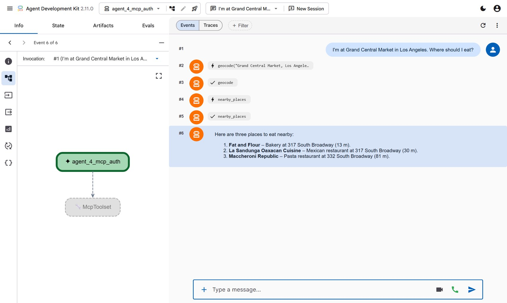
agent_3_mcp has no login, so against the locked server its tools are refused.class GoogleSignIn:
"""Lets a caller in only if Google vouches for them and they are on the list."""
async def verify_token(self, token: str) -> AccessToken | None:
try:
who = id_token.verify_oauth2_token(token, google_transport.Request())
except ValueError:
return None # forged or expired
if who.get("email") not in ALLOWED:
return None # a real account, but not invited
return AccessToken(token=token, client_id=who["email"], scopes=[], expires_at=who["exp"])
python mcp_server/server.py. You can close the third terminal.agent_5_remote_mcp. You will see it in the
dropdown. It is the same agent pointed at a places server running in the cloud, and it is
shown live in the session. It needs a deployed server, so this guide skips it.Finding places and describing them well are different jobs. Describing needs a web search and a strict rule about not inventing things. So that becomes a second agent, running as its own program.
In the third terminal (or a new one, with the virtual environment on), start the description agent and leave it running:
python description_agent/agent.py INFO: Uvicorn running on http://localhost:8002 (Press CTRL+C to quit)
Every A2A agent publishes a card that says who it is and what it does. Open http://localhost:8002/.well-known/agent-card.json in your browser to read it:
{
"name": "description_agent",
"description": "Describes one real place in a few checked sentences.",
"supportedInterfaces": [
{ "url": "http://localhost:8002", "protocolBinding": "JSONRPC", "protocolVersion": "1.0" }
],
"capabilities": { "streaming": true }
}
Now pick agent_6_a2a in the lessons and ask the same question.
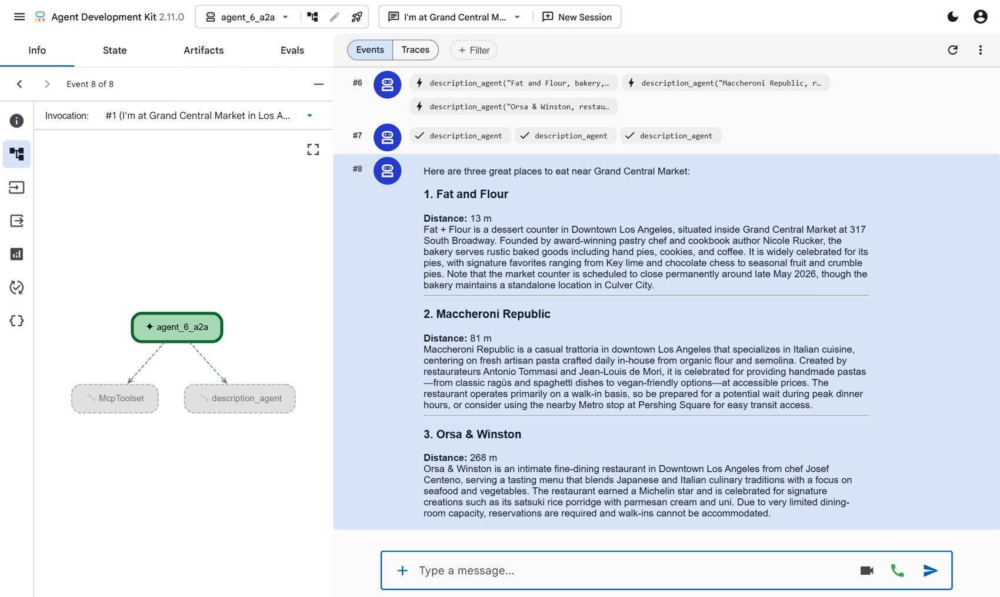
description_agent at the
same moment, three answers come back, and the reply carries real detail. The diagram on the
left shows the agent's two helpers: the MCP tools and the other agent.learn/agent_6_a2a/agent.py, two lines connect them:description_agent = RemoteA2aAgent(
name="description_agent",
description="Describes one real place in a few checked sentences. Send one place per request.",
agent_card="http://localhost:8002" + AGENT_CARD_WELL_KNOWN_PATH,
)
root_agent = Agent(..., tools=[places, AgentTool(description_agent)])
Suppose you want the agent to plan walking tours. You could make its instruction longer, and longer again for the next idea. A skill is the alternative: a folder with one file of instructions that the agent only reads when a request needs it.
Pick agent_7_skills and ask for a tour:
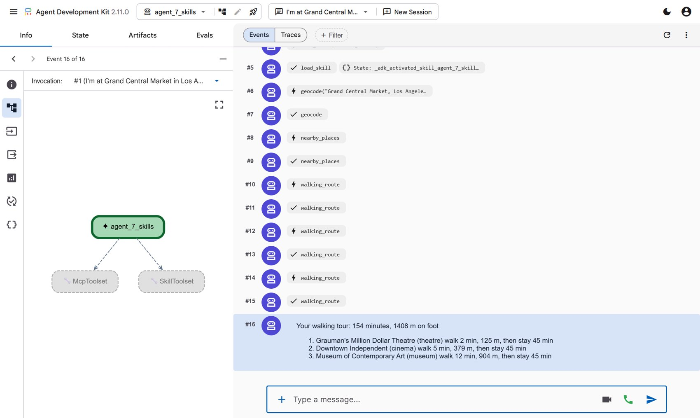
list_skills and load_skill, then the usual map tools, then a tour with times.skills/walking-tour/SKILL.md. The two lines at the top are all the agent sees until it decides it needs the rest.--- name: walking-tour description: Turn a few nearby places into a walking tour with an order, timings and a total. Use when someone asks for a tour, an itinerary, ... --- # Planning a walking tour Work only from what the tools returned. Never add a place, a time or a fact of your own. ...
Try changing a number in that file, for example the minutes to allow at a museum. Stop
adk web learn with Ctrl+C, start it again, and ask once more. You changed what
the agent does without touching any Python.
The lessons showed one idea at a time. The map app runs all of them behind one page.
First stop everything you started: press Ctrl+C in each terminal. Then, in one terminal with the virtual environment on:
python start.py Model: gemini (Google Cloud) or gemma (this laptop)? [gemini] Atlas is starting on http://localhost:5000 with gemini-3.8-flash. Ctrl+C stops everything. Open. Anyone who can reach this address may call the tools. INFO: Uvicorn running on http://localhost:8001 (Press CTRL+C to quit) INFO: Uvicorn running on http://localhost:8002 (Press CTRL+C to quit) * Serving Flask app 'app'
Press Enter to accept gemini. That one command starts the places server,
the description agent and the web app. Open http://localhost:5000.
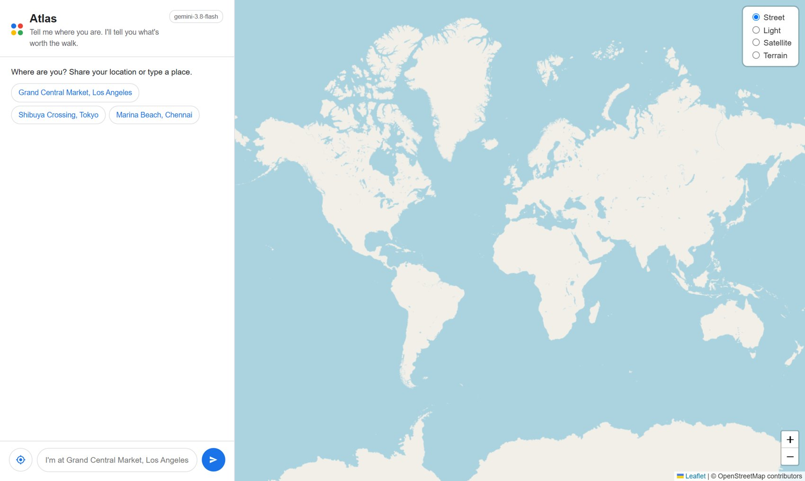
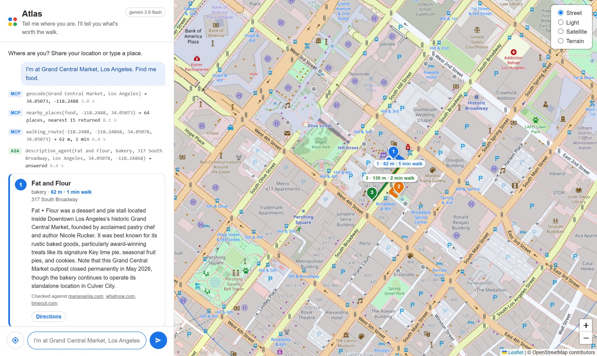
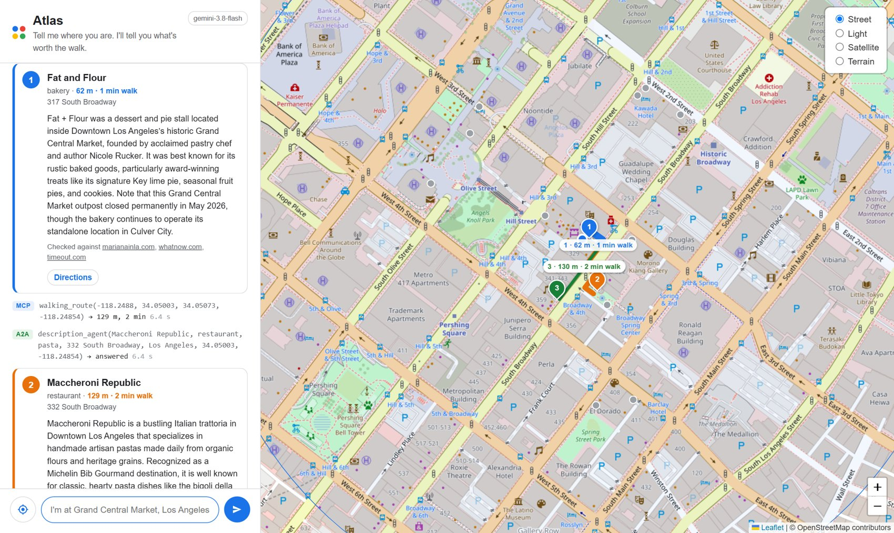
Look closely at the first card in FIG 9. The description agent found that this stall had closed, and said so. It did not copy the cheerful version.
| On the card | Where it comes from |
|---|---|
| Name, type, address, opening hours, website | The map listing, exactly as it is |
| Distance, minutes and the route line | The walking_route tool |
| The Directions button | A Google Maps link built from two coordinates |
| The description | The description agent, checked with Google Search |
| "Checked against" links | The pages that search used |
The model writes one paragraph. Everything else on the card is data.
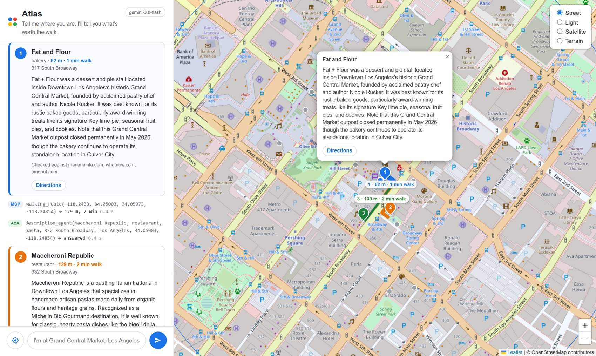
Ask about one of the places by name. The question goes back to the description agent, and the answer arrives in the chat with its sources.
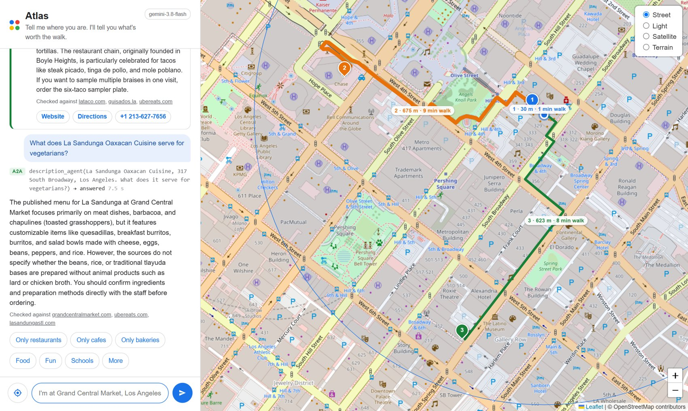
The grey dots are the other places the agent could have chosen. Hover over one to see what it is. Click it, then Add to my picks, and the agent describes it and draws its route like the others.
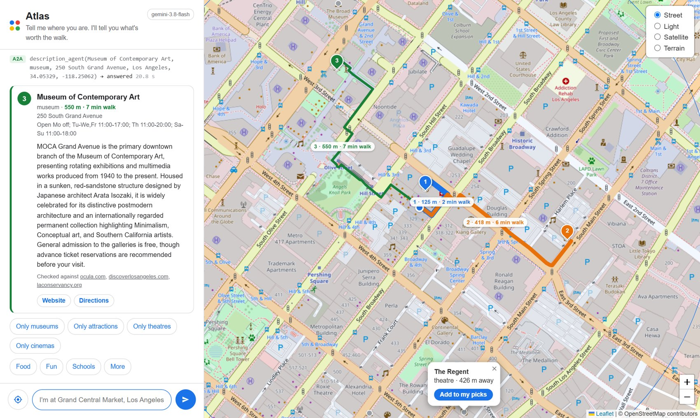
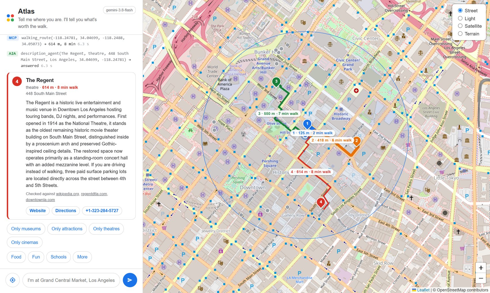
Under every answer there are buttons for what to try next. More opens four more kinds. After a search you also get buttons that narrow it, such as Only museums.
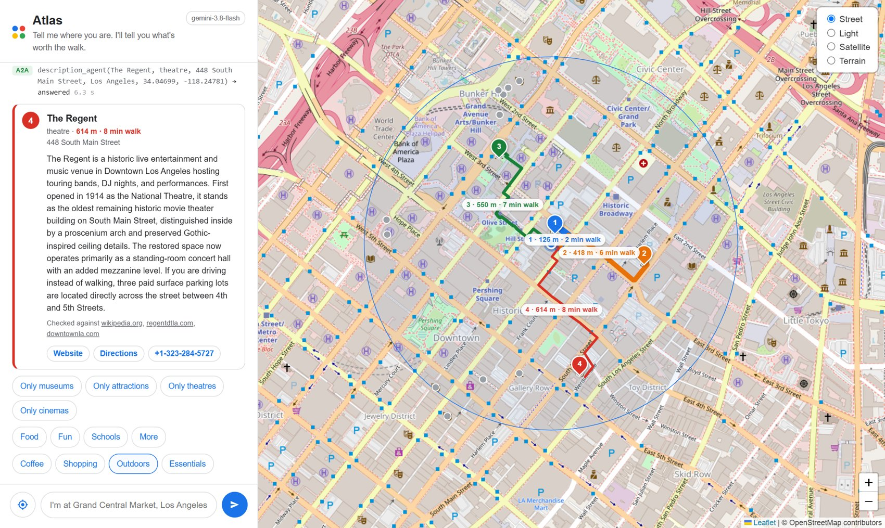
| Kind | What it finds |
|---|---|
| Food | restaurants, cafes, bakeries |
| Coffee | cafes |
| Fun | museums, attractions, theatres, cinemas |
| Shopping | markets, bookshops, malls, gift shops |
| Outdoors | parks, gardens, viewpoints, beaches |
| Schools | schools, universities, libraries |
| Essentials | pharmacies, cash machines, toilets, stations |
Essentials get a pin and a route but no description. There is nothing to say about a cash machine, so the agent does not ask.
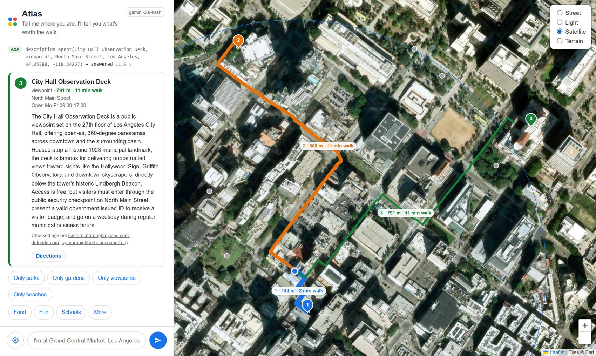
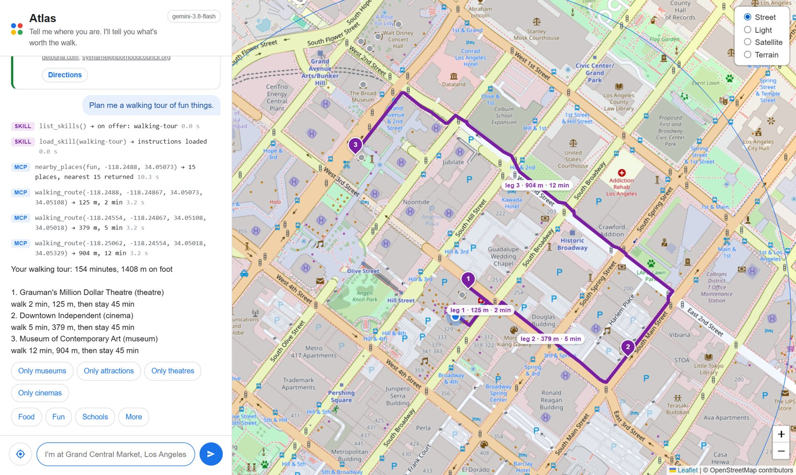
Nothing in the code is tied to Los Angeles. Try I'm near the Eiffel Tower, Paris. Show me fun things, or your own street. Big cities have many places on the map; a small town may have only a few.
When you are done, press Ctrl+C in the terminal. That stops all three programs.
A checklist for when you want to be sure each piece works on its own. Work down it in order. Each line says what to do and what you should see.
| # | Do this | You should see |
|---|---|---|
| 1 | python check.py | Seven lines that say ok, ending with Everything works |
| 2 | adk web learn, then open http://127.0.0.1:8000 | The lesson page, with seven agents in the dropdown at the top left |
| # | Do this | You should see |
|---|---|---|
| 3 | Pick agent_1_simple, ask the eating question | An answer with no lightning bolt rows: it used no tools |
| 4 | Pick agent_2_tools, ask the same | Rows for geocode and nearby_places, then places with distances in metres |
| 5 | Click the nearby_places row with the tick | On the left, the list of places the tool returned |
| # | Do this | You should see |
|---|---|---|
| 6 | In a second terminal: python mcp_server/server.py | A first line that begins Open. and a line ending in localhost:8001 |
| 7 | Pick agent_3_mcp, ask the eating question | The same kind of answer as test 4, and new lines in the server's terminal |
| 8 | In a third terminal: python mcp_server/knock.py | Let in, the three tool names, and coordinates for the Eiffel Tower |
| # | Do this | You should see |
|---|---|---|
| 9 | Stop the server with Ctrl+C. Start it with python mcp_server/server.py --allow you@gmail.com, using your own address | A first line that begins Locked. and shows your address |
| 10 | python mcp_server/knock.py | Refused, and a line with 401 Unauthorized in the server's terminal |
| 11 | python mcp_server/knock.py --login | Let in again |
| 12 | Pick agent_4_mcp_auth, ask the eating question | A normal answer, through the locked server |
| 13 | Stop the server and start it the plain way again: python mcp_server/server.py | Open. You need this for everything that follows |
| # | Do this | You should see |
|---|---|---|
| 14 | python description_agent/agent.py | A line ending in localhost:8002 |
| 15 | Open http://localhost:8002/.well-known/agent-card.json in the browser | A small page of text that includes "name": "description_agent" |
| 16 | Pick agent_6_a2a, ask the eating question | Three description_agent rows, and descriptions with specific facts |
| # | Do this | You should see |
|---|---|---|
| 17 | Pick agent_7_skills, ask for a walking tour of fun things | Rows for list_skills and load_skill, then a numbered tour with minutes and metres |
| 18 | Add up the minutes in the tour yourself | They match the total in its first line |
Stop everything with Ctrl+C in each terminal, then run python start.py, press
Enter, and open http://localhost:5000.
| # | Do this | You should see |
|---|---|---|
| 19 | Type I'm at Grand Central Market, Los Angeles. Find me food. | The map flies there. Three cards, three pins and three routes, each set in its own colour |
| 20 | Read the rows above the cards | Blue MCP rows and green A2A rows |
| 21 | Read one card to the bottom | A line that starts Checked against with links, and a Directions button |
| 22 | Click a card | The map moves to that place and opens its popup |
| 23 | Ask What does (a name from a card) serve for vegetarians? | An answer in the chat, with its own Checked against links |
| 24 | Hover over a grey dot, then click it and press Add to my picks | A fourth card, pin and route in a new colour |
| 25 | Press More, then Essentials | Three pins with routes and no description |
| 26 | Press one of the Only … buttons after a search | Results of just that type |
| 27 | In the box at the top right of the map, choose Satellite | The map changes to aerial photos; pins and routes stay |
| 28 | Type Plan me a walking tour of fun things. | Purple SKILL rows, a tour in the chat, and purple numbered legs on the map |
| 29 | Type a place in another country, for example I'm near the Eiffel Tower, Paris. Show me fun things. | The same behaviour, somewhere else |
| 30 | Press Ctrl+C in the terminal | All three programs stop, and the page no longer answers |
Gemma is Google's open model. With a recent graphics card you can run it yourself, and then nothing in this guide needs a cloud project or costs anything.
ollama pull gemma4:e4b-it-qat ollama create atlas-gemma -f Modelfile
Then start the app and type gemma when it asks:
python start.py Model: gemini (Google Cloud) or gemma (this laptop)? [gemini] gemma
For the lessons, change the last line of .env to
ATLAS_MODEL=ollama_chat/atlas-gemma before you run adk web learn.
| What you see | Why | What to do |
|---|---|---|
python or adk is not recognised | The virtual environment is off in this terminal | Run the activate line from section 5.2 again |
| This API method requires billing to be enabled | Billing is off for the project | Section 4.2 |
| Permission denied or API has not been used in project | Vertex AI is not switched on, or the wrong project is set | Sections 4.3 and 4.4 |
| Your default credentials were not found | Programs on your laptop are not signed in | Section 4.5 |
429 RESOURCE_EXHAUSTED, or a card that says the description agent was rate limited | Gemini is busy. It happens in bursts | Wait a few seconds and ask again |
| A row ends failed: The map service refused the request | The free map service allows about one request a second | Wait a few seconds and ask again |
| An agent says it cannot find a location, or has no tools | The places server is not running, or it is still locked from step 4 | Start it the plain way: python mcp_server/server.py |
agent_6_a2a fails | The description agent is not running | python description_agent/agent.py |
| Address already in use | An earlier copy is still running | Find its terminal and press Ctrl+C, or close that terminal |
| The page looks old after a change | The browser kept the previous version | Hard refresh: Ctrl+F5, or Cmd+Shift+R on a Mac |
| Word | In plain words |
|---|---|
| Agent | A model in a loop that decides its own next step: think, use a tool, read the result, repeat |
| Tool | A function the agent can ask your program to run |
| MCP | Model Context Protocol. A shared way to serve tools so any agent can use them |
| MCP server | The program that offers the tools. Here, the places server |
| OAuth | The standard behind "Sign in with Google". Someone you trust issues a token that proves who the caller is |
| Token | A short-lived, signed proof of identity. Here it lasts an hour |
| 401 | The web's code for "I do not know who you are". What the locked server answers to a stranger |
| A2A | Agent to Agent. A shared way for one agent to hand a task to another |
| Agent card | A small public file where an A2A agent says who it is and what it does |
| Skill | A folder with a SKILL.md file: instructions the agent loads only when it needs them |
| Grounding | Making the model answer from a search or a document, not from memory |
| Virtual environment | A private set of Python packages for one project |
| Port | A numbered door on your computer. Each program in this guide listens on its own |
| localhost | Your own computer, as seen from itself |